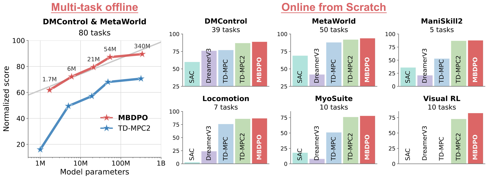
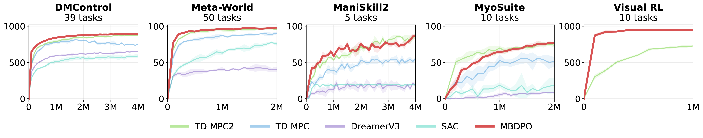
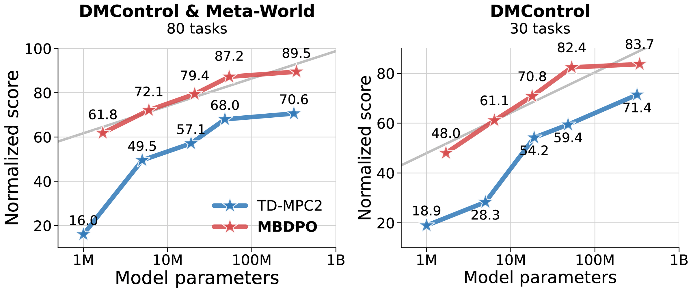
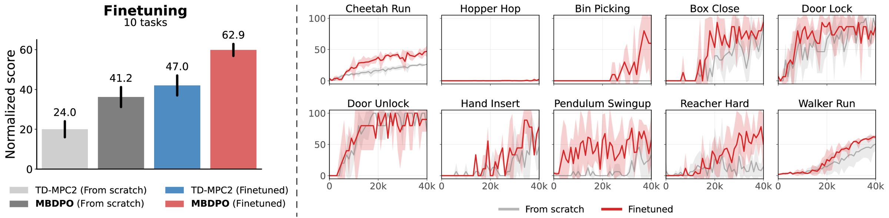
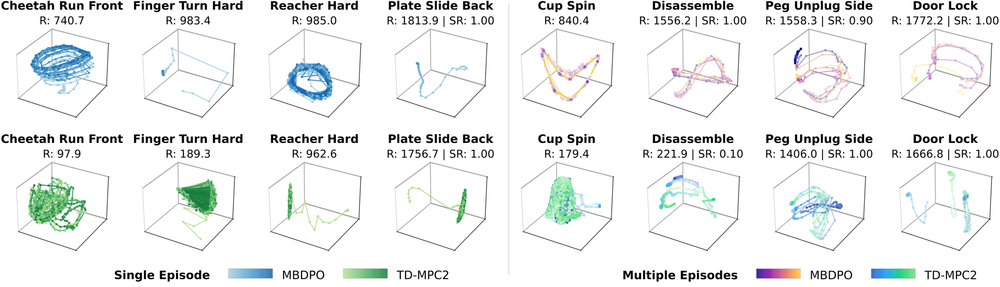
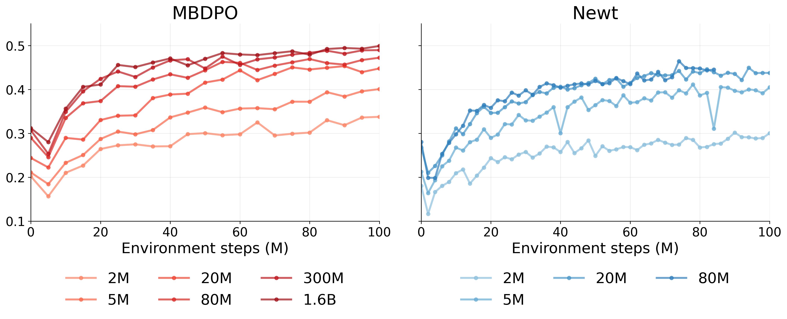
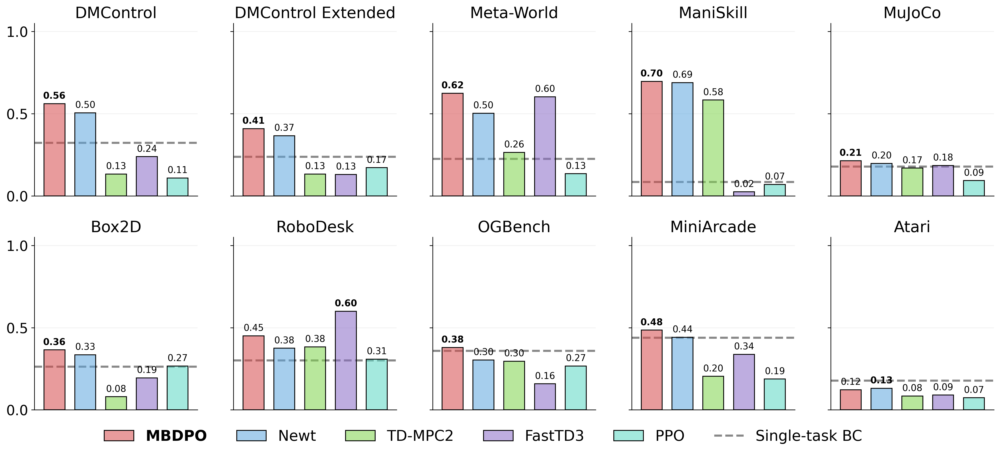

MBDPO: Scaling World-Model Reinforcement Learning Through Diffusion Policy Optimization
Abstract
MBDPO is a model-based reinforcement learning framework that unifies search and policy optimization through a diffusion policy inside a learned latent world model. Instead of placing an explicit planner such as MPPI on top of the world model, MBDPO reformulates policy optimization as a diffusion process over imagined trajectories, where the score field is corrected by model-based returns and anchored to the behavior distribution via an implicit energy function. This eliminates the structural misalignment between search and value learning that limits prior world-model approaches, and yields monotonic scaling of performance with model capacity.
Why Scaling World-Model RL Remain Hard?
Scaling world-model RL is not limited only by model prediction error. A deeper bottleneck is the mismatch between how actions are selected by search and how values are learned from replay data: the planner may move toward actions where the learned value function is unreliable, causing value overestimation and unstable policy improvement.
World-Model Score Correction
MBDPO uses imagined rollouts in the latent world model to evaluate candidate action sequences and correct the diffusion score toward higher-return behaviors.
Implicit Energy Anchor
MBDPO learns an implicit energy function from replay data to anchor the policy to the behavior distribution, preventing drift toward unreliable high-value regions.
Diffusion Policy
MBDPO represents policy improvement as iterative denoising over future action sequences, turning search into a learnable policy optimization process.

Model-Based Diffusion Policy Optimization (MBDPO)

Strong Performance Across Online, Offline, and Fine-tuning

Overview. On the benchmark suite used in TD-MPC2, MBDPO scales consistently in multi-task offline pretraining and achieves strong online-from-scratch performance across 121 continuous-control tasks.

MBDPO achieves strong online-from-scratch performance across diverse control suites. Compared with SAC, DreamerV3, TD-MPC, and TD-MPC2, MBDPO learns faster and reaches higher or competitive final performance across state-based, visual, locomotion, manipulation, and musculoskeletal control tasks.

Monotonic Scaling in Offline Pretraining
MBDPO shows monotonic performance gains as model capacity increases from 1.7M to 340M parameters, outperforming TD-MPC2 across model scales in multi-task offline pretraining.

Offline-to-online fine-tuning transfers a pretrained generalist agent to unseen tasks with limited interaction. With only 40K online steps per task, MBDPO fine-tuning substantially outperforms training from scratch, demonstrating efficient adaptation from pretrained world-model representations.
Structured Latent Trajectories

MBDPO produces structured latent trajectories that align with task dynamics. Cyclic control tasks form closed-loop patterns, while manipulation tasks follow directed paths toward the goal. Representative rollouts from the TD-MPC2 benchmark suite are shown below.
Success Rate: 1.00
Success Rate: 1.00
Success Rate: 1.00
Success Rate: 0.90
Scaling Across 200 Multitask RL Tasks
We evaluate MBDPO on all 200 tasks and 10 domains of Newt MMBench, comparing model scaling and final performance with Newt and other multitask baselines.
Overall Model Scaling

Average normalized performance across the 200-task suite over 100M environment steps. MBDPO exhibits consistent gains as model capacity increases, shown alongside the reported Newt scaling curves.
Performance Across 10 Domains

Final performance at 100M environment steps across all 10 MMBench domains. MBDPO outperforms Newt in 9 of 10 domains and is compared with TD-MPC2, FastTD3, PPO, and single-task behavior cloning.
Rollouts Across All 200 Tasks
Qualitative rollouts from MBDPO spanning locomotion, dexterous and tabletop manipulation, goal-reaching navigation, and pixel-based games.
BibTeX
@misc{cheng2026scalingworldmodelreinforcementlearning,
title={Scaling World-Model Reinforcement Learning Through Diffusion Policy Optimization},
author={Xiaoyuan Cheng and Wenxuan Yuan and Zhancun Mu and Yuanzhao Zhang and Yiming Yang and Hai Wang and Zhuo Sun and Che Liu},
year={2026},
eprint={2605.26282},
archivePrefix={arXiv},
primaryClass={cs.LG},
url={http://arxiv.org/abs/2605.26282}
}